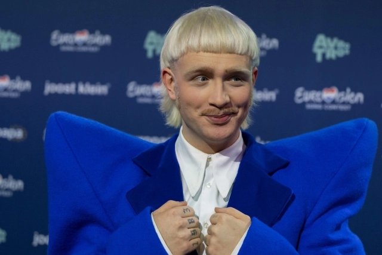

L'incubateur du sentiment européen
Faire entrer le projet européen dans les cœurs et les esprits

Avez-vous remarqué la campagne de l'Union européenne ces dernières semaines ? Si ce n'est pas le cas, vous n'êtes pas le seul. La Commission européenne est un organe législatif. Demander à la Commission de faire la promotion de l'Europe revient à confier la publicité à son service juridique : vous n'attirerez probablement pas beaucoup l'attention et ne gagnerez pas beaucoup de cœurs. C'est un problème, car s'il n'y a que deux événements qui nous font nous sentir européens - la Ligue des champions et l'Eurovision - on ne peut pas s'attendre à ce qu'une grande partie de la population s'identifie à l'idée européenne et la soutienne. Cela devrait nous intéresser, car si l'Europe était dans le cœur des gens, Volt finirait par figurer sur leurs bulletins.
L'idée
La culture européenne n'a pas besoin d'être créée. Elle existe déjà sous la forme d'un mélange de nos 27 cultures et nationalités (pour en savoir plus). De temps à autre, je vois de superbes projets, par exemple en réalisant des affiches electorales positives pour le NFP (nouveau front populaire) lors des dernières élections anticipées. L'idée a même trouvé une excellente suite lors de la dernière Journée de l'Europe
Quand j'ai l'occasion de m'entretenir avec des artistes ou des donateurs potentiels, je leur demande généralement s'ils seraient intéressés par des projets visant à renforcer le sentiment d'appartenance européenne au sein du grand public. « Avec plaisir », à condition que ce ne soit pas trop bureaucratique ni politique, me répond-on généralement. Je souhaiterais donc que Volt Europa joue le rôle de facilitateur entre ces deux parties et mette en relation des mécènes et des artistes afin qu'ils travaillent ensemble sur des projets susceptibles de créer un sentiment européen au sein de la population.
Qu'est-ce que cela signifie concrètement ?
- Volt disposera de son propre incubateur « culturel » interne (aussi en tant qu'expérience politique), chargé de rechercher des financements et d'attribuer des projets aux artistes.
- Si nous finissons par créer notre EuPP et notre fondation, je confierais cette tâche à la fondation, car nous n'avons pas besoin de plusieurs entités travaillant toutes sur la politique. La fondation aura pour mission de renforcer le sentiment d'appartenance à l'Europe.
- Cela signifierait que nous commençons à considérer la culture comme quelque chose d’important et que nous ne nous concentrons pas uniquement sur des sujets comme la défense ou la technologie. Tous ces domaines doivent être défendus, et je pense que la mise en place d’un incubateur pour les projets culturels attirera également des membres au-delà de notre base classique – moins intéressés par les aspects politiques Peut-être que cela contribuera également à augmenter le nombre de nos membres féminins.
Calendrier
Cela dépendra de notre capacité à lever des fonds et de notre réseau, en particulier dans le secteur culturel. J'aimerais également que les membres et les équipes puissent proposer des idées ; il faudrait donc mettre en place un moyen simple de soumettre des propositions pour évaluation, ainsi que des critères permettant de les classer. Je pense que nous pouvons partir de ce qui fonctionne rapidement pour évoluer vers un système plus professionnel ; plus tôt nous commencerons à recueillir des idées, mieux ce sera.
Je vois le rôle des coprésidents dans le réseautage et la prise de contact avec des donateurs et des artistes potentiels. Une fois que nous aurons un argumentaire, je serais ravi de lancer la collecte de fonds et d’essayer de présenter des idées.
Comment mesurez-vous le succès ?
C’est relativement facile :
- Nombre de contacts dans le secteur culturel (artistes et donateurs)
- Montant des dons reçus pour des projets culturels
- Nombre d'idées soumises par les membres et évaluées
- Nombre de projets réalisés
- (Bonus) Impact sur la parité entre les genres au sein de Volt Europa
Nous ne devons pas ignorer les sommes investies pour faire échouer le projet européen (par exemple 150 millions d'euros). Je pense qu'il existe tout autant de soutiens potentiels qui souhaitent que le projet européen réussisse. Trouvons-les et offrons-leur une plateforme pour soutenir l'idée européenne.